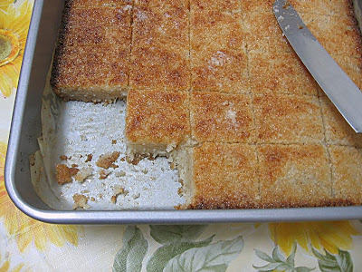

How To Make No crust Coconut pie!
Welcome To my Page! This how to site will help you make Coconut pie!
Coconut pie is so fun to bake. I am so happy to show you the way to make Coconut pie.The experience of baking has been life changing for me. I hope you enjoy!
